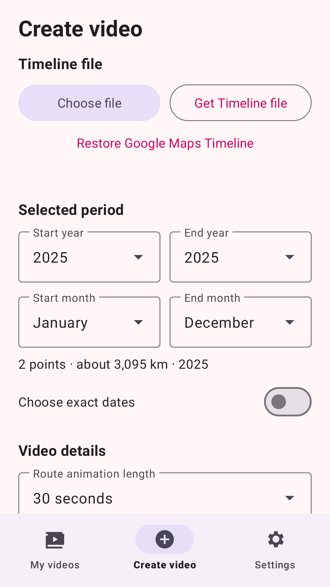
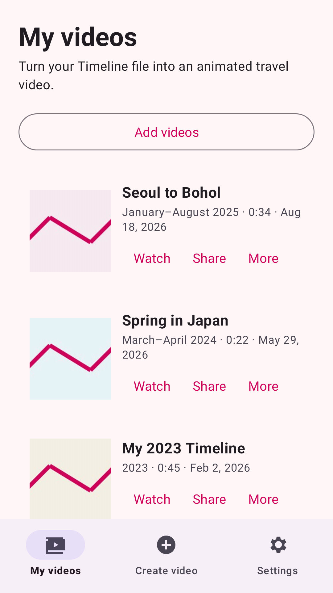
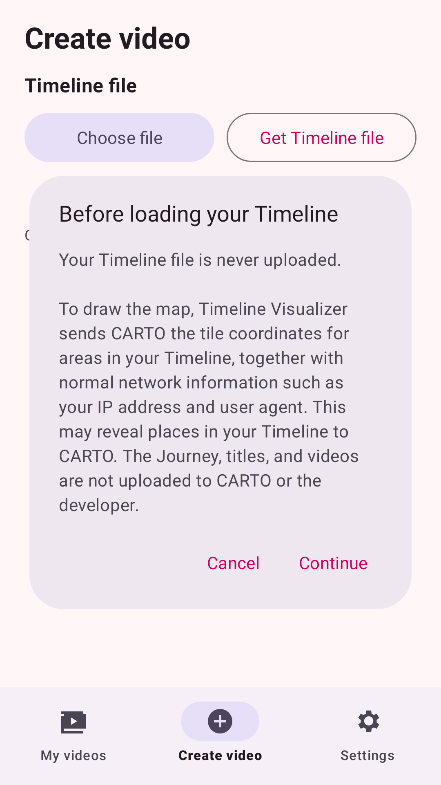
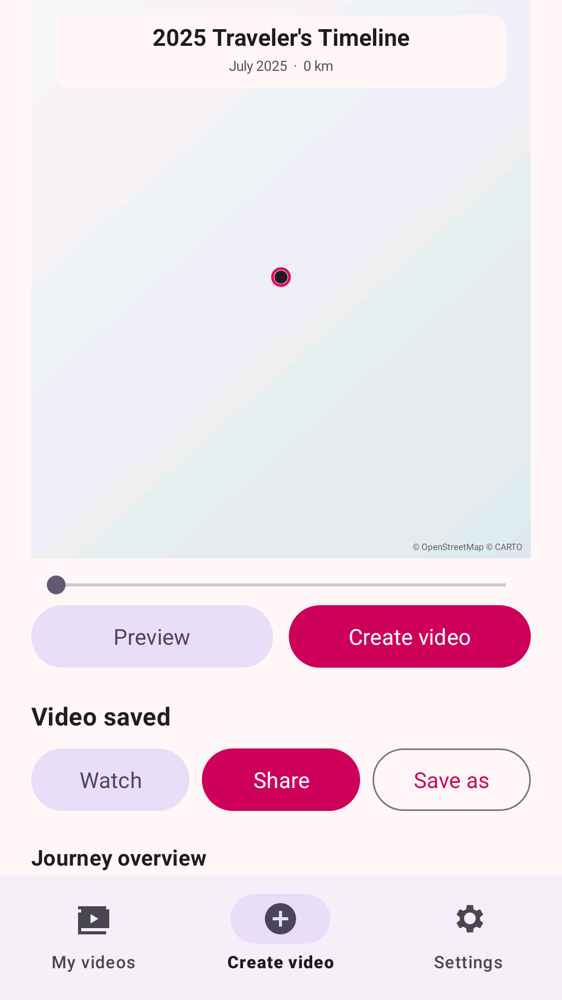

Timeline Visualizer
Timeline Visualizer
An animated route, not a static map
The camera moves along your journey with your choice of Fixed, Steady, or Dynamic movement, then pulls back to show every trip at once.
Timeline Visualizer turns a Google Maps Timeline export into an animated map video on your own phone. Pick the dates, preview the route, and create an MP4 that is ready to watch or share.

Google gives you your Timeline as a plain JSON file. On its own it is a wall of coordinates. Timeline Visualizer reads that file on your device and animates it: the camera follows your route across the map, day by day, and finishes with a zoom-out over the complete journey.
The camera moves along your journey with your choice of Fixed, Steady, or Dynamic movement, then pulls back to show every trip at once.
Choose exact dates or an inclusive month range across several years, and set the animation anywhere from 10 to 300 seconds.
Export at 480p, 720p, or 1080p in square, portrait, or landscape — encoded by your phone and saved to your gallery.
Your Timeline file is never uploaded. There is no account, no analytics, and no developer-operated server.



On Android: Settings → Location → Location services → Timeline → Export Timeline data. On iPhone: Google Maps → profile picture → Settings → Personal content → Export Timeline data.
Open New video, select the saved Timeline.json, then
pick exact dates or a month range. The preview animates as soon as the period is set.
Set the title, quality, and orientation, then tap Create video. On Android, encoding continues in the background with a progress notification.
One thing the app does send. To draw the map it requests map tiles from CARTO, and the terrain style also requests ground heights from the AWS Open Data terrain set. Those requests contain tile coordinates for the areas shown, which can reveal places in your Timeline. The app explains this before your first import and lets you cancel. Details are in the privacy policy.
Timeline Visualizer is released under the MIT license. It is not affiliated with or endorsed by Google, and Google Maps is a trademark of Google LLC.